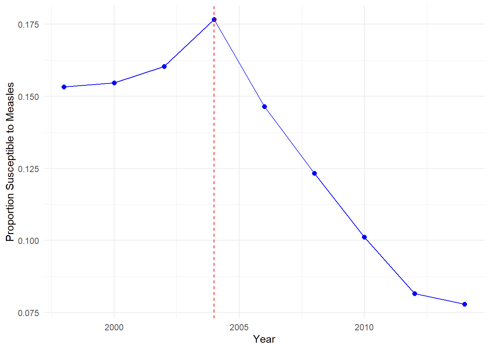
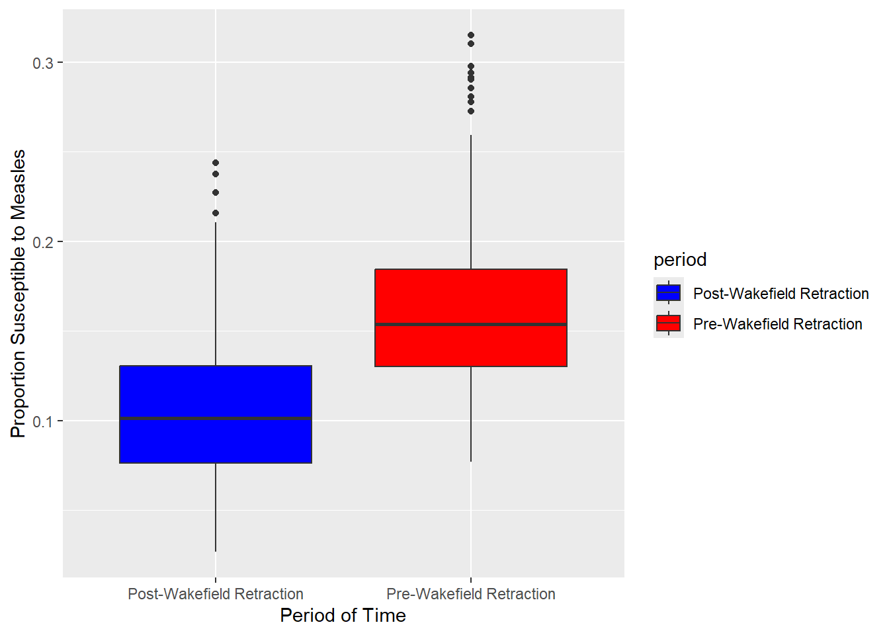
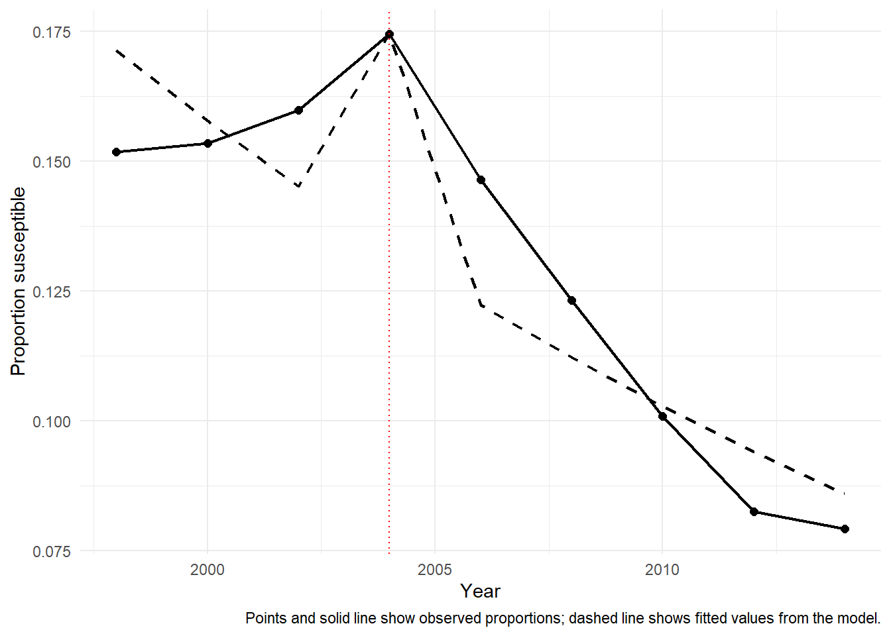

Group_14_Analysis
Introduction
Measles is highly infectious and are easily spread throughout communities, vaccinations are key to limit the spread of measles. Population susceptibility is a key indicator of outbreak risks. In this study, the proportion of pre-school children who are susceptible to measles is analysed across intermediate zones.
Our data set consists of 101 intermediate zones (IZ) from Edinburgh. The IZ have on average 4,000 residents and the data is from 1998-2014. The data set also includes the number of pre-school children susceptible to measles in a given IZ and the total number of pre-schooled children in a given IZ.
Public concern regarding the measles, mumps and rubella (MMR) vaccine increased following the claims with links to autism, most notably in the Wakefield study. These claims were later dismissed and the Wakefield article was retracted in 2004.
We have two main questions of interest, including, did the retraction of the Wakefield article exhibit any change in measles susceptibility in Edinburgh. Also did the change, if there was any, occur in 2004 alongside the article’s retraction.
Exploratory Analysis
In the exploratory analysis we will put the data into two groups, pre-2004 and post-2004, this allows for an initial assessment of the impact of the retraction of the Wakefield article on measles susceptibility across IZ.
Figure 1 shows the proportion of the average measles susceptibility across all IZ for each year, we can see a large decrease in 2004 when the Wakefield article was retracted. After 2004 we see an exponential decrease in the average proportion of measles susceptibility untill out latest time point in 2014. 2004 had the largest value at 0.175 but we see this decrease each time period to eventually being just above 0.075 in 2014.

In Figure 2 we observe a clear change in average measles susceptibility between the two groups. Following 2004, the median susceptibility appears lower compared to the pre 2004 period, suggesting a decrease after the retraction of the Wakefield article. Variability appears similar between both groups whilst both groups appear to have potential outliers, indiacting the presence of intermediate zones with unusually high susceptibility.
Formal Analysis
To investigate whether the change in measles susceptibility occurred specifically in 2004 alongside the retraction of the Wakefield article, we fitted a grouped binomial logistic regression model. This approach is appropriate because, for each intermediate zone and year, the data record the number of susceptible pre-school children Y out of the total number of pre-school children N. Therefore, the response is naturally binomial. To answer this question, the model included an overall time trend and a separate indicator for the year 2004. This allowed us to assess whether measles susceptibility in 2004 deviated from the general pattern observed over time.
Table Table 1 presents the estimated odds ratios from the fitted model. The key parameter is the indicator for the year 2004, since this directly tests whether 2004 represented a distinct change point after accounting for the overall temporal trend in measles susceptibility.
| Term | Odds Ratio | Lower 95% CI | Upper 95% CI | p-value |
|---|---|---|---|---|
| (Intercept) | 0.207 | 0.200 | 0.214 | <0.001 |
| Time trend | 0.906 | 0.899 | 0.913 | <0.001 |
| Year 2004 indicator | 1.373 | 1.296 | 1.454 | <0.001 |
The coefficient for the 2004 indicator was positive and highly statistically significant. The estimated odds ratio for the 2004 effect was 1.373 (95% CI: 1.296 to 1.454, 𝑝 < 0.001). This indicates that, after accounting for the overall time trend, the odds of measles susceptibility in 2004 were substantially higher than would be expected from the broader temporal pattern alone. Therefore, the analysis provides strong evidence that the change in measles susceptibility occurred specifically in 2004, rather than being explained only by a gradual trend over time.
The time trend was also statistically significant, with an estimated odds ratio of 0.906 (95% CI: 0.899 to 0.913, 𝑝 < 0.001). This suggests that measles susceptibility generally declined over the study period. However, despite this overall downward trend, the significant positive 2004 effect indicates that 2004 represented a distinct short-term increase in susceptibility.

Figure Figure 3 compares the observed yearly proportions with the fitted values from the model. The fitted values capture the overall decline in measles susceptibility over time, while also indicating a distinct upward deviation in 2004 relative to the long-term trend. This visual pattern is consistent with the regression results and supports the conclusion that 2004 was a distinct year in terms of measles susceptibility.
Overall, there is strong statistical evidence that 2004 represented a distinct deviation from the overall temporal trend. After accounting for the general decline in measles susceptibility over time, the odds of susceptibility in 2004 remained significantly higher than expected. This suggests that the change in measles susceptibility occurred specifically in 2004, consistent with the timing of the retraction of the Wakefield article.